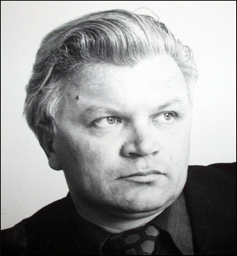

Сендюков Станислав Давыдович
родился 15 октября 1936 г. в поселке Камардан Астраханской области.
Окончил семилетку в селе Евпраксино, Астраханское педагогическое училище, Саратовский университет,
аспирантуру. Кандидат филологических наук: монография и публикации по проблемам отечественной
драматургии 70-х годов; книги и публикации по современному устному народному творчеству.
Член-корреспондент Международной Академии системных исследований. Член союза писателей с 1978 года:
книги о детях и для детей, сказки, сборники сатиры и юмора, басни. Заслуженный работник культуры РФ.
Работал учителем Евпраксинской школы, с 1961 г. - журналист.